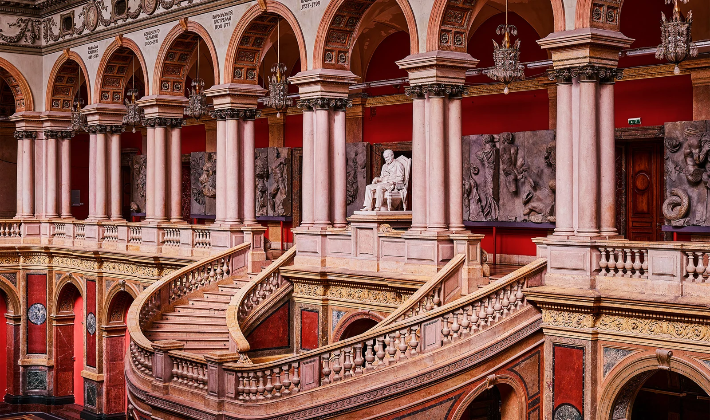
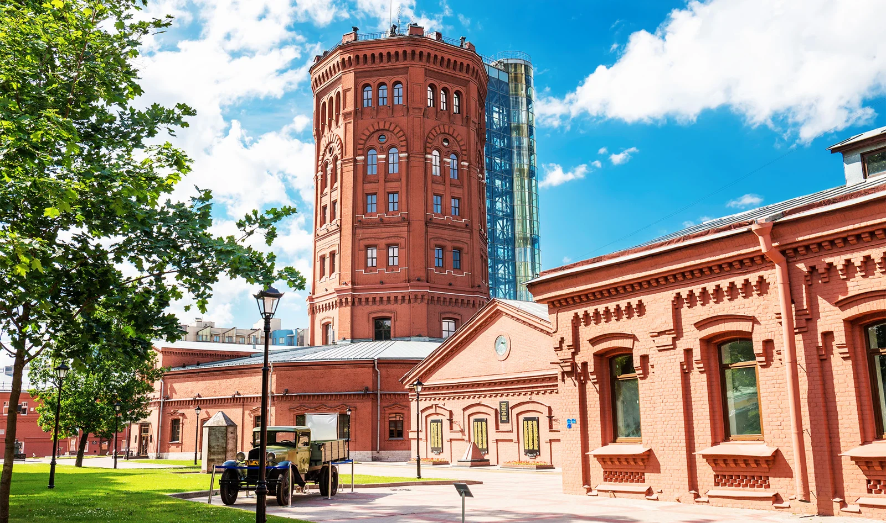
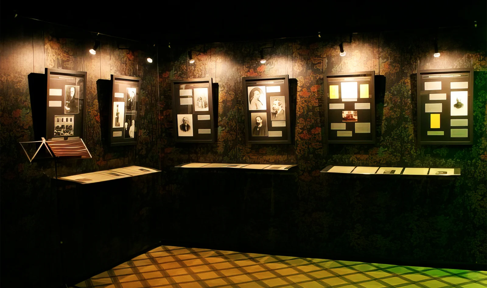
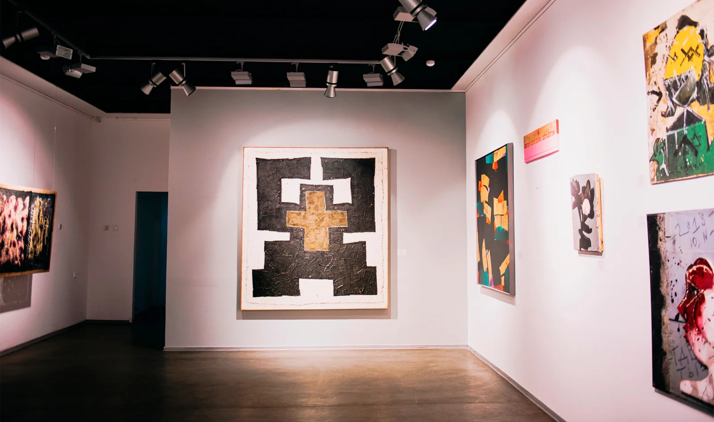
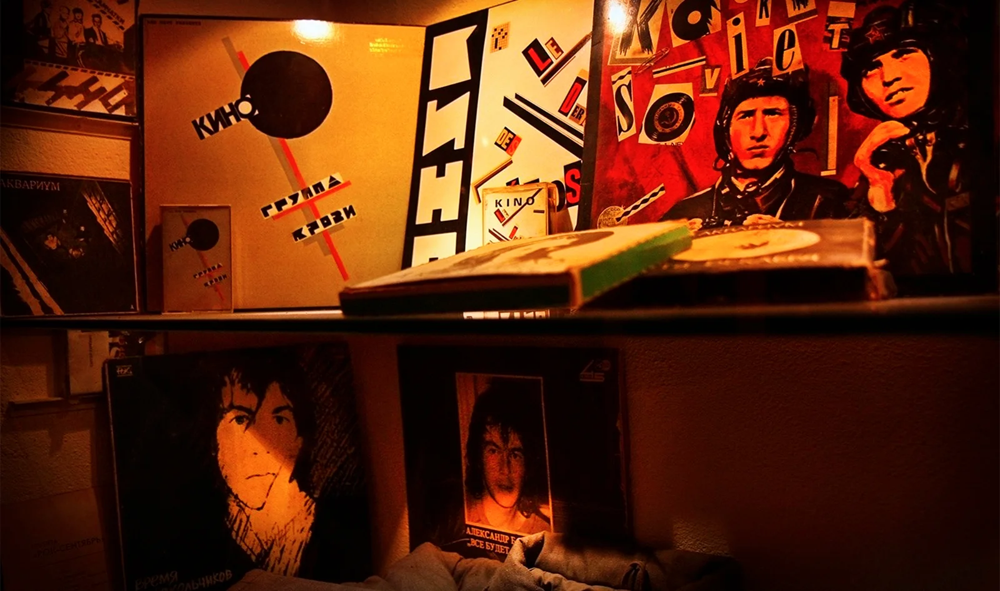

10 необычных музеев Санкт-Петербурга
Автор: О! Редакция
Знакомство с небольшими тематическими музеями и необычными коллекциями. Материал пригодится для культурной программы за пределами самых известных музейных залов.
Читать полную статью на блоге Островка →


Фото: SSV.Photo / Shutterstock.comИсточник изображения


Фото: Gala_Kan / Shutterstock.comИсточник изображения


Фото: Музей сновидений ФрейдаИсточник изображения


Фото: Музей нонконформистского искусстваИсточник изображения


Фото: КЛУБ-МУЗЕЙ «КОТЕЛЬНАЯ КАМЧАТКА»Источник изображения